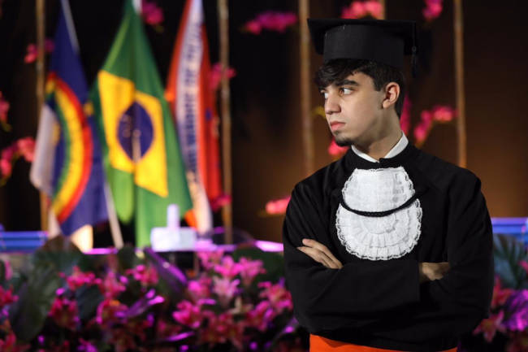
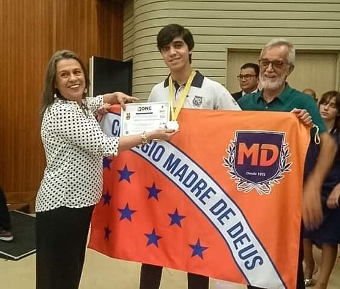
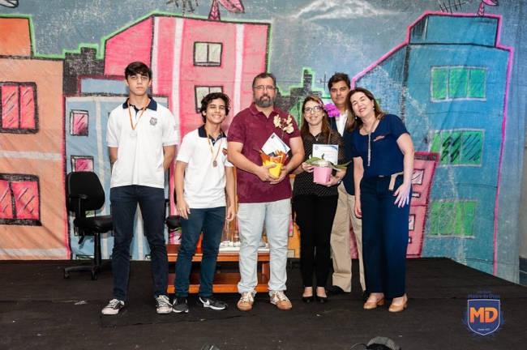

● Ensino fundamental e médio
Ao longo da minha vida, eu morei em diferentes países, o que pode ser notado na minha formação do ensino fundamental. Primeiramente, fui alfabetizado na École Élémentaire Descartes em Lyon, na França. Posteriormente, cursei o 2º ano na Escola Municipal dos Olivais e, do 3º à primeira metade do 4º ano, estudei no Externato Champagnat, ambos em Lisboa, Portugal. Em 2012, voltei ao Brasil e estudei da segunda metade do 4º ao 8º ano no Colégio Santa Maria, em Boa Viagem. Por fim, mudei-me para o Colégio Madre de Deus no 9º ano e estudei lá até concluir o ensino médio.
● Olimpíadas científicas
Durante o ensino médio, com o incentivo de alguns professores e colegas, eu acabei desenvolvendo um interesse pelas ciências naturais (sobretudo Física e Astronomia). Assim, resolvi participar de várias olimpíadas científicas e fui premiado em algumas delas:
-Medalha de bronze na 22ª Olimpíada Brasileira de Astronomia e Astronáutica
-Medalha de prata pelo desempenho nacional na Olimpíada Internacional Matemática sem Fronteiras de 2019
-Medalha de ouro pelo desempenho estadual na Olimpíada Internacional Matemática sem Fronteiras de 2019
-Medalha de ouro na IV Olimpíada Nacional de Ciências


● Curso de inglês
Desde criança, sempre tive vontade de aprender inglês. Isso se deve ao fato de que boa parte do conteúdo de entretenimento que eu consumia (jogos, filmes e sites) era disponível apenas nessa língua. Apesar de eu ter começado a estudar o inglês por conta própria ainda muito novo, foi só em 2012 que eu ingressei em um curso de fato. Assim, em 2019, eu fiz a prova do CAE (Cambridge English: Advanced) e conquistei um diploma que garante que o meu nível de proficiência é C1.